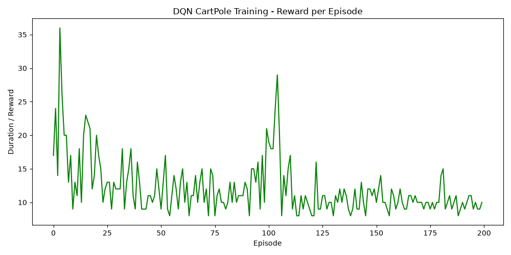

Reference: Mnih et al., 2013
This project recreates the Deep Q-Network (DQN) algorithm, a breakthrough in Reinforcement Learning that successfully combined Q-Learning with deep neural networks. By utilizing a Replay Memory buffer and a detached Target Network, DQN stabilized the training of deep value functions.
I implemented the DQN algorithm in PyTorch and evaluated it on the classic Gymnasium CartPole-v1 environment. The agent observes the state vector (position, velocity, angle, angular velocity) and selects discrete actions (push left or push right).
The plot below displays the reward (number of frames the pole remained upright) per episode. As training progresses and epsilon decays, the agent learns to stabilize the pole for longer durations.

This implementation successfully captures the essence of the original DQN paper. The replay memory breaks temporal correlations in the training data, and the target network provides stable Q-value targets, allowing the agent to converge on an optimal policy.